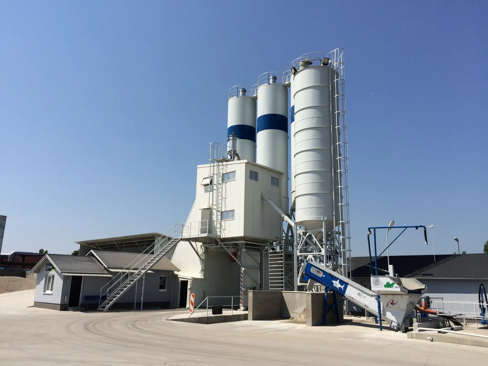
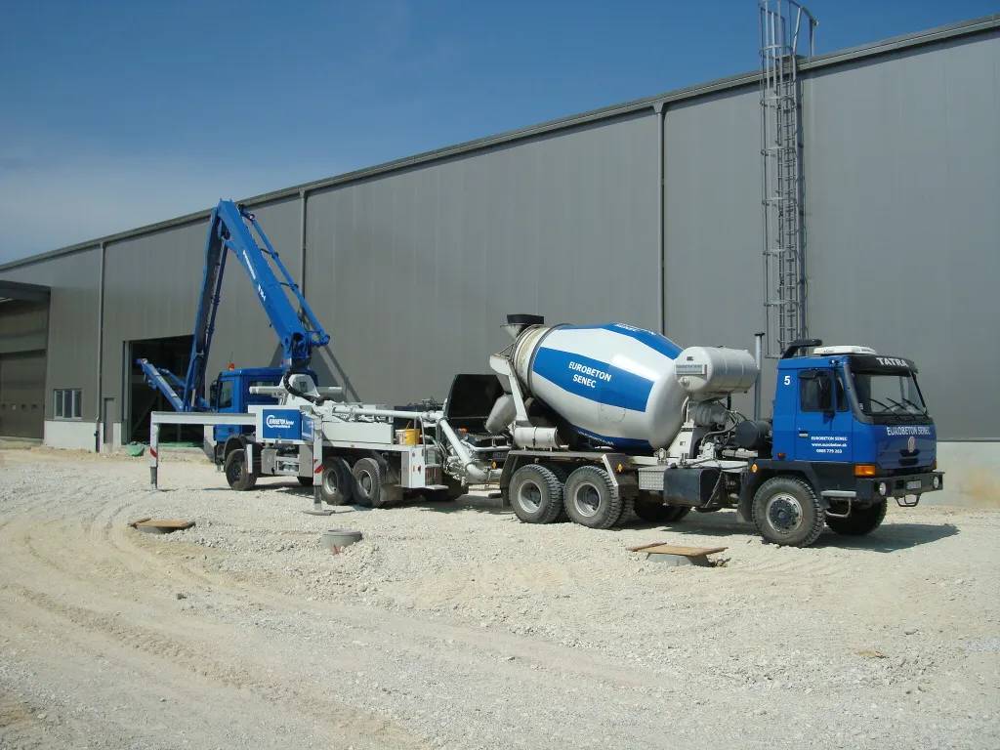
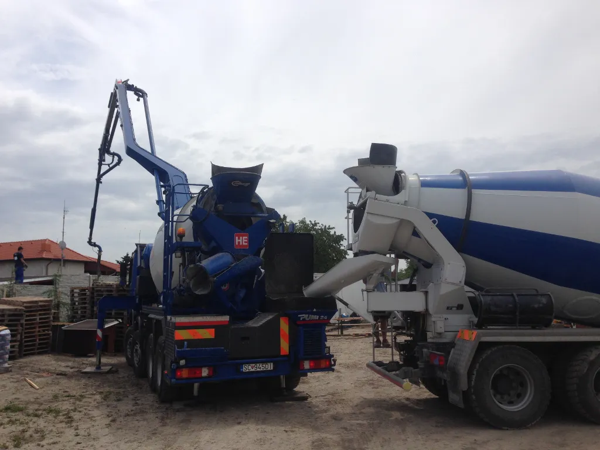
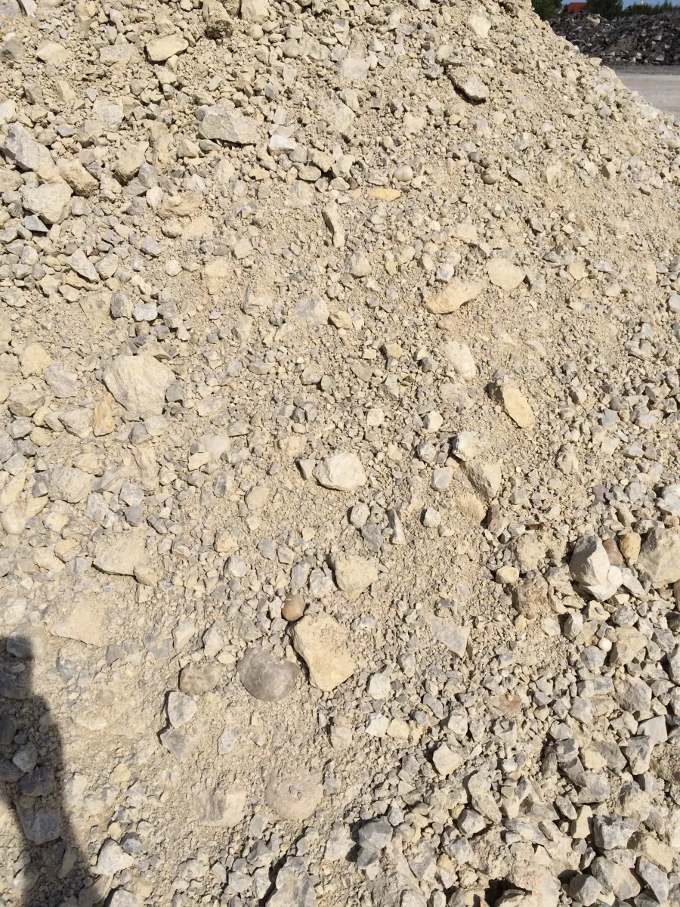

Produkty a služby
Od zmesi po uloženie betónu na stavbe.
Vyberte si výrobu betónu, dopravu, vhodný spôsob čerpania alebo dodávku kameniva. Pri objednávke spolu preveríme technické podmienky.

01 — Výroba
Certifikované betónové zmesi
Plnoautomatická technológia vyrába bežne používané druhy betónu a umožňuje pripraviť aj receptúru podľa konkrétnych požiadaviek projektu. Dodané množstvo a kvalitu je možné spätne overiť.
- Stabilizácie CBGM 3/4, 5/6 a 8/10
- Cestné betóny CBIII a ďalšie zmesi
- Drátkobetón, potery a polystyrénbetón podľa požiadavky
- Opatrenia pre plynulú zimnú výrobu

02 — Logistika
Doprava a čerpanie betónu
EUROBETON zabezpečuje výrobu aj dopravu ponúkaných tried betónu vlastnými autodomiešavačmi. Pre čerpanie sú k dispozícii pumpy s rôznym dosahom ramena.
- Autodomiešavače MAN s objemom 8 m³
- Tatra Phoenix s objemom 5 m³
- PUTZMEISTER M28 a M36 s dosahom 28 m a 36 m
- Zavlhnutý a suchý betón sklápačmi do 13 t alebo 6 t
Vhodnosť vozidla a čerpadla závisí od objemu, prístupu na stavbu a potrebného dosahu. Tieto údaje uveďte v dopyte.
Overiť dopravu a čerpanie
03 — Kompaktné riešenie
PUMI: pumpa a mixér v jednom
PUMI od Putzmeister spája prepravu a čerpanie v jednom vozidle. Uplatní sa najmä tam, kde je samostatné automobilové čerpadlo príliš nákladné alebo kde je na stavbe obmedzený priestor.
- Praktické pri menších prácach a rekonštrukciách
- Možnosť použiť prídavné hadice
- Môže fungovať aj ako samostatný domiešavač

04 — Sypké materiály
Predaj a doprava kameniva
V ponuke je ťažené aj drvené kamenivo (makadam), štrkopiesky a ďalšie sypké materiály. Pri nakladaní sa kamenivo váži certifikovanou váhou TAMTRON s možnosťou priamej kontroly váhy.
- Ťažené a drvené kamenivo v rôznych frakciách
- Štrkopiesok a ďalšie sypké materiály
- MAN 6×6 s nosnosťou do 13 t
- Mercedes s nosnosťou do 6 t
Strojový park
Technika podľa typu dodávky
Prehľad je zostavený z údajov zverejnených na pôvodnom firemnom webe.
| Technika | Účel | Uvedený parameter |
|---|---|---|
| Autodomiešavač MAN | Doprava čerstvého betónu S3 | 8 m³ |
| Tatra Phoenix | Doprava čerstvého betónu S3 | 5 m³ |
| PUTZMEISTER M28 | Čerpanie betónu | rameno 28 m |
| PUTZMEISTER M36 | Čerpanie betónu | rameno 36 m |
| PUMI 28 | Doprava a čerpanie v jednom | rameno 28 m, nádrž do 4,5 m³ |
| MAN 6×6 | Suchý betón a sypké materiály | nosnosť do 13 t |
| Mercedes 4×2 | Suchý betón a sypké materiály | nosnosť do 6 t |
Na stiahnutie
Aktuálne cenníky a certifikáty
Súbory boli prevzaté z pôvodného webu 2. 8. 2026. Pred produkčným nasadením odporúčame overiť ich platnosť.
Máte podklady?
Pošlite typ materiálu, množstvo, miesto a termín.
V dopyte môžete doplniť aj požadovaný dosah čerpania a prístup na stavbu.